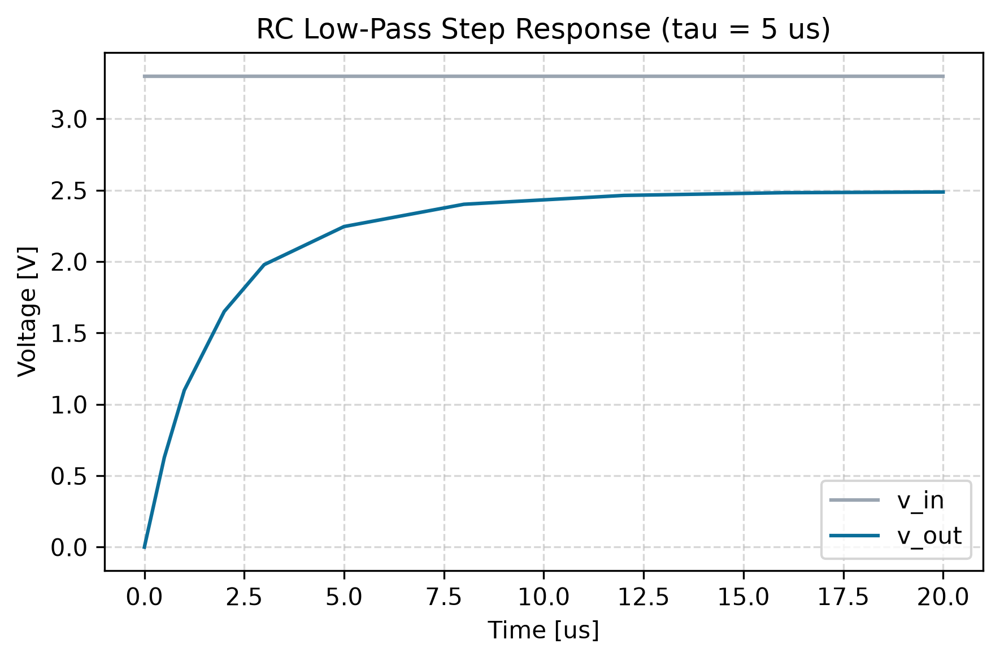
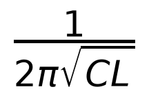

LDO-1200 Datasheet Excerpt — generated from presenter blocks
Every element below is rendered by a minimal consumer of the presenter shared block
contract from the block dicts returned by this slice's builders.
1. Waveform plot block — build_plot_from_csv

RC step response generated by build_plot_from_csv from rc_step_response.csv
block = {"type": "plot", "source": "rc_step_response.png", "caption": ..., "width_in": 6.0}
2. Symbolic equation block — build_equation_from_sympy

sympy expression 1/(2*pi*sqrt(L*C)) → LaTeX → mathtext PNG
block = {"type": "equation", "latex": "\frac{1}{2 \pi \sqrt{C L}}", "font_size_pt": 18.0, "image": "resonance_equation.png"}
3. Spec table block with reordered, renamed headers (F1 fix)
| Min (V) | Typ (V) | Max (V) | Units | Parameter | Conditions |
|---|
| 1.18 | 1.20 | 1.22 | V | Output Voltage | I_OUT = 10 mA |
| - | 0.000850 | 0.00120 | A | Quiescent Current | V_IN = 3.3 V |
| - | 0.120 | 0.500 | %/V | Line Regulation | 1.8 V <= V_IN <= 5.5 V |
| - | 0.120 | 0.250 | V | Dropout Voltage | I_OUT = 100 mA |
headers requested: ['Min (V)', 'Typ (V)', 'Max (V)', 'Units', 'Parameter', 'Conditions']
4. Spec table block, default header order
| Parameter | Symbol | Min | Typ | Max | Units | Conditions |
|---|
| Output Voltage | V_OUT | 1.18 | 1.20 | 1.22 | V | I_OUT = 10 mA |
| Quiescent Current | I_Q | - | 0.000850 | 0.00120 | A | V_IN = 3.3 V |
| Line Regulation | REG_line | - | 0.120 | 0.500 | %/V | 1.8 V <= V_IN <= 5.5 V |
| Dropout Voltage | V_DO | - | 0.120 | 0.250 | V | I_OUT = 100 mA |
5. PVT corner table block
| Corner | Process | Voltage [V] | Temp [°C] | I_Q [uA] | V_DO [mV] |
|---|
| TT 27C | TT | 3.30 | 27.0 | 850 | 118 |
| FF -40C | FF | 3.50 | -40.0 | 912 | 101 |
| SS 85C | SS | 3.00 | 85.0 | 793 | 141 |
6. inf/nan formatting parity across formatters (F4 fix)
| formatter | float('inf') | float('-inf') | float('nan') |
|---|
| format_sigfigs | Inf | -Inf | NaN |
| format_engineering | Inf | -Inf | NaN |